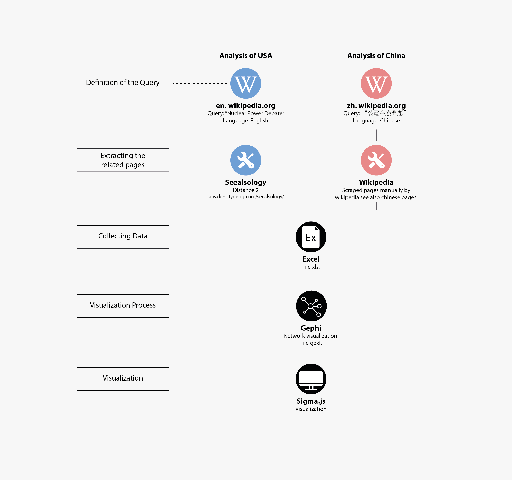

Description
USA and China have a different age of nuclear reactors and tradition. USA is the nation with more active nuclear power plants and the reactors age is quite old compared to the others reactors around the world. On the other hand in China the situation is different, there are a lot of young reactors and this and of energy is also quite new for this country.
We firstly wanted to see if these two countries have debates on the Nuclear Power and if they had debates in common.
The debates in Usa are more articulated and they have many different topics. In China most of the debates talks about reactors as technology, power, safety and accidents.
Protocol
We collected all the pages related to the wikipedia page “Nuclear Power Debate” both for english page and chinese page. For the english pages we used the tool Seealsology and for the chinese one we collected the see also pages manually.
After collect all the data we made a visualization with Gephi and visualized the net relation of the chinese and american pages.
Data
Data source: Wikipedia English Page, Wikipedia Chinese Page , Seealsology
Download data
Seealsology allows you to explore in a quick and dirty way the semantic area related to any Wikipedia Page. It doesn’t work with chinese Wikipedia pages and for that we explored the data manually.